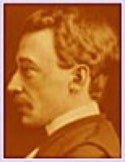

Beaubien-Perrault-Benington - Person Sheet
Beaubien-Perrault-Benington - Person Sheet

NameLouis Alexandre Taschereau
Birth5 Mar 1867, Québec, Québec22
Death6 Jul 1952, Québec, Québec22
OccupationPremier ministre du Québec
FatherHon. Juge Jean Thomas Taschereau (1814-1893)
MotherM. Joséphine Caron
Notes for Louis Alexandre Taschereau
21Né à Québec le 5 mars 1867, du mariage de l'honorable Jean-Thomas Taschereau, juge de la Cour Suprême du Canada, et de Joséphine Caron. Il fut admis au barreau le 3 juillet 1889 et entra immédiatement dans l'importante société Fitzpatrick, Parent et Taschereau. M. Taschereau a été syndic puis bâtonnier du barreau de Québec. Echevin de la ville de Québec de 1906 à 1908, il eut sa premiere élection politique en 1892 dans le comté de Dorchester où il fut défait par l'honorable L.-P. Pelletier. Élu député de Montmorency à l’Assemblée législative le 7 décembre 1900, il a été continuellement réélu depuis. Ministre des Travaux Publics et du Travail le 17 octobre 1907, M. Taschereau fut choisi comme procureur général le 26 août 1919. Il fut premier ministre du Québec de 1920 à 1936. Telles sont les principales dates de l'existence de l'honorable M. Taschereau, que les circonstances ont éloigné du barreau, mais qui, semble-t-il , préférait encore les luttes du palais à toutes les autres.
22 Né à Québec, le 5 mars 1867, fils de Jean-Thomas Taschereau, avocat et juge à la Cour suprême, et de Marie-Louise-Joséphine Caron.
A étudié au séminaire de Québec et à l'université Laval. Récipiendaire des médailles Tessier, Angers, lord Stanley of Preston, gouverneur général. Fit sa cléricature auprès de Me François Langelier. Admis au barreau de la province de Québec le 9 juillet 1889. Créé conseil en loi du roi le 30 juin 1903.
Commença sa carrière au cabinet de Charles Fitzpatrick et de Simon-Napoléon Parent, puis exerça par la suite sa profession avec Lawrence Arthur Cannon et Georges Parent (député à la Chambre des communes de 1904 à 1911 et de 1917 à 1930, puis sénateur de 1930 à 1942). S'associa également à Léon Casgrain et à ses deux fils, Paul et Robert Taschereau. Syndic du barreau de Québec en 1908. Bâtonnier du barreau de Québec de 1911 à 1913 et du barreau de la province en 1912 et 1913. Journaliste à l'Action libérale. Occupa également le poste de directeur et vice-président de la Banque d'économie de Québec et fut membre des conseils d'administration des banques et entreprises suivantes: Barclay Bank (Canada) Ltd., Royal Trust, Caisse d'économie, Molson Bank, Banque de Montréal, Canadian Investments Funds, Sun Life Assurance Co. of Canada, Metropolitan Life Assurance Co., Liverpool & London & Globe Insurance Co., Pioneer Insurance Co., Globe Indemnity Co. et Manitoba Liverpool Insurance Co.
Échevin du quartier Saint-Pierre au conseil municipal de Québec en 1906 et 1907. Candidat libéral défait dans Dorchester en 1892. Élu député libéral dans Montmorency en 1900. Réélu sans opposition en 1904. Son siège devint vacant lors de sa nomination au cabinet. Réélu à l'élection partielle du 4 novembre 1907. Ministre des Travaux publics et du Travail dans le cabinet Gouin du 17 octobre 1907 au 25 août 1919. Élu dans Montmorency et défait dans Charlevoix en 1908. Réélu dans Montmorency en 1912, 1916, 1919 (sans opposition), 1923, 1927 (sans opposition), 1931 et 1935. Procureur général dans le cabinet Gouin du 25 août 1919 au 9 juillet 1920. Premier ministre et président du Conseil exécutif du 9 juillet 1920 jusqu'à sa démission, le 11 juin 1936. Procureur général du 9 juillet 1920 au 13 mars 1936. Ministre des Affaires municipales du 30 avril 1924 au 6 juin 1935. Trésorier de la province du 27 novembre 1930 au 26 octobre 1932. Ne s'est pas représenté en 1936.
Docteur en droit honoris causa de l'université Laval en 1908 et de l'University of Toronto en 1921. Créé officier de la Légion d'honneur en 1924, commandeur en 1927, puis
grand-croix en 1934. Créé chevalier de l'ordre de Léopold en 1925 et commandeur de l'ordre de la Couronne de Belgique en 1926. Patron d'honneur des Emprunts de la victoire
de 1939 à 1945. Président honoraire conjoint de la campagne nationale de la Croix-Rouge. Gouverneur de la Catholic Church Extension Society in Canada. Vice-président du
Quebec Miniature Rifle Club. Président du comité exécutif de l'hôpital Laval. Membre de la Commission des champs de bataille nationaux, des Forestiers indépendants, des Royal
Guardians, de l'Alliance nationale, du Club de la garnison et du Club Mont-Royal.
Décédé à Québec, le 6 juillet 1952, à l'âge de 85 ans et 4 mois. Inhumé à Sainte-Foy, dans le cimetière Notre-Dame-de-Belmont, le 9 juillet 1952.
Avait épousé à Sainte-Anne-de-la-Pocatière, le 26 mai 1891, Adine Dionne, fille d'Élisée Dionne, avocat, et de Clara Têtu.
Arrière-petit-fils de Gabriel Elzéar Taschereau et de Jean-Antoine Panet. Petit-fils de Jean-Thomas Taschereau et de René-Édouard Caron. Neveu de Charles Fitzpatrick et
petit-neveu d'Antoine-Charles Taschereau. Demi-frère d'Henri-Thomas Taschereau, député à la Chambre des communes de 1872 à 1878. Beau-frère
d'Auguste-Charles-Philippe Landry. Père de Robert Taschereau.
Bibliographie: Dupont, Antonin, Les relations entre l'Église et l'État sous Louis-Alexandre Taschereau, 1920-1936, Montréal, Guérin, 1972, 336 p. Dupont, Antonin,
<Louis-Alexandre Taschereau et la législation sociale au Québec, 1920-1936>, RHAF, 26, 3 (déc. 1972), p. 397-426. Toupin, Louise, L'intervention du premier ministre
Taschereau dans l'industrie du papier journal, 1928-1935, thèse de maîtrise en sciences politiques à l'université de Montréal, 1972. Vigod, Bernard L., Quebec before
Duplessis. The political career of Louis-Alexandre Taschereau, Montréal, McGill-Queen's University Press, 1986, 312 p. Vigod, Bernard L., Taschereau, Sillery: Septentrion,
[1996]. 392 p.
22 Né à Québec, le 5 mars 1867, fils de Jean-Thomas Taschereau, avocat et juge à la Cour suprême, et de Marie-Louise-Joséphine Caron.
A étudié au séminaire de Québec et à l'université Laval. Récipiendaire des médailles Tessier, Angers, lord Stanley of Preston, gouverneur général. Fit sa cléricature auprès de Me François Langelier. Admis au barreau de la province de Québec le 9 juillet 1889. Créé conseil en loi du roi le 30 juin 1903.
Commença sa carrière au cabinet de Charles Fitzpatrick et de Simon-Napoléon Parent, puis exerça par la suite sa profession avec Lawrence Arthur Cannon et Georges Parent (député à la Chambre des communes de 1904 à 1911 et de 1917 à 1930, puis sénateur de 1930 à 1942). S'associa également à Léon Casgrain et à ses deux fils, Paul et Robert Taschereau. Syndic du barreau de Québec en 1908. Bâtonnier du barreau de Québec de 1911 à 1913 et du barreau de la province en 1912 et 1913. Journaliste à l'Action libérale. Occupa également le poste de directeur et vice-président de la Banque d'économie de Québec et fut membre des conseils d'administration des banques et entreprises suivantes: Barclay Bank (Canada) Ltd., Royal Trust, Caisse d'économie, Molson Bank, Banque de Montréal, Canadian Investments Funds, Sun Life Assurance Co. of Canada, Metropolitan Life Assurance Co., Liverpool & London & Globe Insurance Co., Pioneer Insurance Co., Globe Indemnity Co. et Manitoba Liverpool Insurance Co.
Échevin du quartier Saint-Pierre au conseil municipal de Québec en 1906 et 1907. Candidat libéral défait dans Dorchester en 1892. Élu député libéral dans Montmorency en 1900. Réélu sans opposition en 1904. Son siège devint vacant lors de sa nomination au cabinet. Réélu à l'élection partielle du 4 novembre 1907. Ministre des Travaux publics et du Travail dans le cabinet Gouin du 17 octobre 1907 au 25 août 1919. Élu dans Montmorency et défait dans Charlevoix en 1908. Réélu dans Montmorency en 1912, 1916, 1919 (sans opposition), 1923, 1927 (sans opposition), 1931 et 1935. Procureur général dans le cabinet Gouin du 25 août 1919 au 9 juillet 1920. Premier ministre et président du Conseil exécutif du 9 juillet 1920 jusqu'à sa démission, le 11 juin 1936. Procureur général du 9 juillet 1920 au 13 mars 1936. Ministre des Affaires municipales du 30 avril 1924 au 6 juin 1935. Trésorier de la province du 27 novembre 1930 au 26 octobre 1932. Ne s'est pas représenté en 1936.
Docteur en droit honoris causa de l'université Laval en 1908 et de l'University of Toronto en 1921. Créé officier de la Légion d'honneur en 1924, commandeur en 1927, puis
grand-croix en 1934. Créé chevalier de l'ordre de Léopold en 1925 et commandeur de l'ordre de la Couronne de Belgique en 1926. Patron d'honneur des Emprunts de la victoire
de 1939 à 1945. Président honoraire conjoint de la campagne nationale de la Croix-Rouge. Gouverneur de la Catholic Church Extension Society in Canada. Vice-président du
Quebec Miniature Rifle Club. Président du comité exécutif de l'hôpital Laval. Membre de la Commission des champs de bataille nationaux, des Forestiers indépendants, des Royal
Guardians, de l'Alliance nationale, du Club de la garnison et du Club Mont-Royal.
Décédé à Québec, le 6 juillet 1952, à l'âge de 85 ans et 4 mois. Inhumé à Sainte-Foy, dans le cimetière Notre-Dame-de-Belmont, le 9 juillet 1952.
Avait épousé à Sainte-Anne-de-la-Pocatière, le 26 mai 1891, Adine Dionne, fille d'Élisée Dionne, avocat, et de Clara Têtu.
Arrière-petit-fils de Gabriel Elzéar Taschereau et de Jean-Antoine Panet. Petit-fils de Jean-Thomas Taschereau et de René-Édouard Caron. Neveu de Charles Fitzpatrick et
petit-neveu d'Antoine-Charles Taschereau. Demi-frère d'Henri-Thomas Taschereau, député à la Chambre des communes de 1872 à 1878. Beau-frère
d'Auguste-Charles-Philippe Landry. Père de Robert Taschereau.
Bibliographie: Dupont, Antonin, Les relations entre l'Église et l'État sous Louis-Alexandre Taschereau, 1920-1936, Montréal, Guérin, 1972, 336 p. Dupont, Antonin,
<Louis-Alexandre Taschereau et la législation sociale au Québec, 1920-1936>, RHAF, 26, 3 (déc. 1972), p. 397-426. Toupin, Louise, L'intervention du premier ministre
Taschereau dans l'industrie du papier journal, 1928-1935, thèse de maîtrise en sciences politiques à l'université de Montréal, 1972. Vigod, Bernard L., Quebec before
Duplessis. The political career of Louis-Alexandre Taschereau, Montréal, McGill-Queen's University Press, 1986, 312 p. Vigod, Bernard L., Taschereau, Sillery: Septentrion,
[1996]. 392 p.